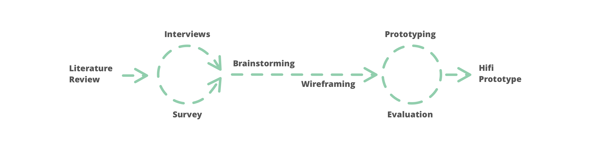
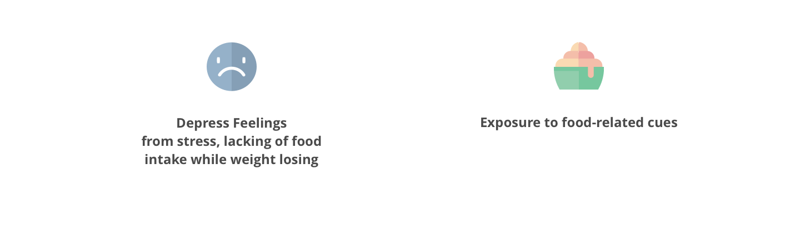
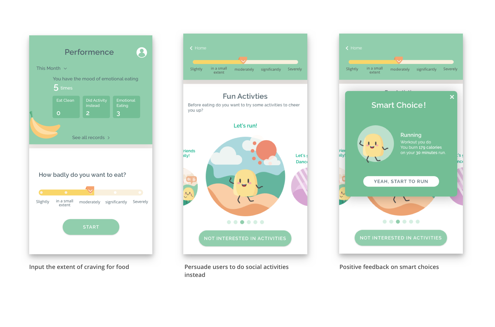

EatJoy is a mobile application that helps emotional eaters to make better food choices, control eating time and amount and track their behavior change overtime, by applying behavior change techniques.
UX Research & Design, UI Design, Consumer Health Technology | Team: Qing Guo, Puhe Liang | Duration: September - January 2018 | Tools: Sketch, InVision
Eating is the daily activity for human beings. But emotional eating is when you eat to satisfy emotional hunger instead of physical hunger.
In order to make more accurate and personalized recommendations, several information is needed from the user, including
Literature Review
Studies have shown emotional eating is a risk factor of obesity, [1] and the relation seems even stronger among adolescent [2]. 40% people report they eat more when they are stressed, and the food they seek for is usually comfort food with high sodium or calories, such as ice cream, pizza [3].
The causes of emotional eating [4] [5] can be categorized into two：
The existing coping strategies include using alternative ways to deal with stress, avoiding triggers in the environment, and self-record hunger level to enhance mindful eating.
Survey & Interviews
We received 111 survey results and interviewed 7 students who have experienced emotional eating from the University of Michigan (UM) community.
Several key insights from the survey and research:
Possible solutions are mentioned in the research:
Persona
Workflow
Selected Design Iterations
Challenge 1
Solution: Providing highly personalized suggestions based on user data.
Challenge 2
Self-monitoring is a technique records one's own activities, thoughts and feelings. It's an effective way to tracking users' eating patterns, and raise their self-awareness like how frequently this happens, what's the amount and time they eat each time, and how their behavior change overtime and finally eliminate the monitored behavior, in this case the emotional eating behavior.
Challenge 3
Social support can facilitate the health behavior change and the management of chronic conditions. In this case, social support can be both intentional or unintentional. Talking with friends and families about this situation and letting them monitor the behavior control. Or eliminating the craving for food through social interactions.
Challenge 4
Studies showed craving for a specific food may indicate mineral deficiency, and there are lots of food swap ideas which can meet eaters' needs. But this harm reduction method is only a temporary solution for emotional eating, since it does not stops the emotional eating but only using healthier food to reduce the harmful results on health.
Challenge 5
Goals improve performance. With a specific goal of the amount and time of eating will facilitate the fulfillment of emotional eating control. And a positive feedback is provided to encourage the behavior with a simple self-reflection to help improve self-regulation ans build up a long term habit.
Uncontrolled emotional eating can have a long term impact on people. By manually setting alarm, stocking more healthier food at home, and marking the times I had emotional eating on the calendar the solution sometimes worked for me and sometimes failed. Similarly, for people who have suffered from it, the behavior can be hard to change. A long term test can better understand how user uses the APP when experiencing emotional eating, and how user's behavior change overtime.
The food being stored at home and those do not need extra preparation are more likely to be chose. We considered let users to rate how accessible the food is during onboarding. But this greatly increases the complexity of onboarding and user setting. After a round of user evaluation, we removed this for now. But other more intelligent mechanisms should be involved in the solution to make sure the food we recommended is accessible for users. For example, combing with grocery shopping experience to remind users to buy healthier food.
From user research, we found social distractions can sometimes stop the emotional eating behavior. But in the meanwhile, most emotional eaters do not want to disclose the behavior to their friends and family. So there is a possibility to put more stress on social distractions. And even involve family or friends into the process of emotional eating control.